طاقة شمسية مربوطة بشبكة الستاغ
للديار، المحلات و البناءات الفلاحية: لوحات، أوندولور و حمايات باش تولّد الضو متاعك بروحك و تنقّص من فاتورة الستاغ.
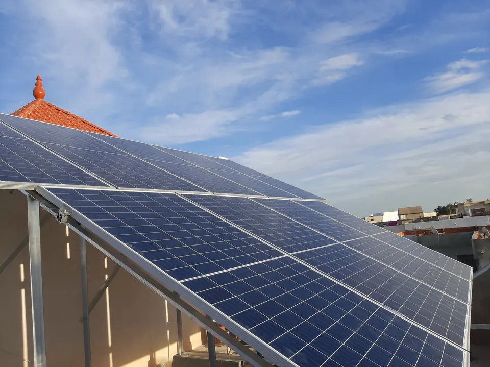
SIGEP تدرس و تركّب أنظمة الطاقة الشمسية، الضخ بالطاقة الشمسية و السخانات الشمسية. ولّد الضو متاعك بروحك و نقّص من فاتورة الستاغ لسنين طويلة.
L’énergie du soleil, installée chez vous.
للديار، للمحلات و للفلاحة، في تونس الكل.
للديار، المحلات و البناءات الفلاحية: لوحات، أوندولور و حمايات باش تولّد الضو متاعك بروحك و تنقّص من فاتورة الستاغ.
مضخات سطحية و مضخات غاطسة تخدم بالشمس: السقي من غير مازوط و من غير فاتورة ضو.
سخانات شمسية (300 لتر و أكثر) باش يكون عندك الماء السخون بالشمس.
نشوفو استهلاكك، السطح متاعك ولا البير، و نحسبولك التركيبة اللي تناسبك.
الفريق متاعنا يركّب: الهيكل، الكوابل، صناديق الحماية AC/DC، الأوندولور، الربط و التشغيل.
تتبّع الإنتاج من التليفون متاعك، و خدمة ما بعد البيع باش التركيبة تدوم.
تكلّمنا ولا ابعثلنا على الواتساب: ندرسو استهلاكك و البلاصة متاعك، من غير أي التزام.
بلاش، من غير التزامنقترحولك التركيبة اللي تناسبك، مع دوفي واضح و مفصّل.
دوفي واضح و مفصّلالفريق متاعنا يركّب الهيكل، اللوحات، الأوندولور و الحمايات، بالعناية و بالسلامة.
تركيب بعناية و سلامةنشغّلو التركيبة، نوريوك كيفاش تتبّع الإنتاج، و نقعدو معاك حتى بعد التركيب.
متابعة بعد التركيبسطوح ديار، لوحات على الأرض و ضخ فلاحي: شوف شوية من الشانطيات متاعنا.
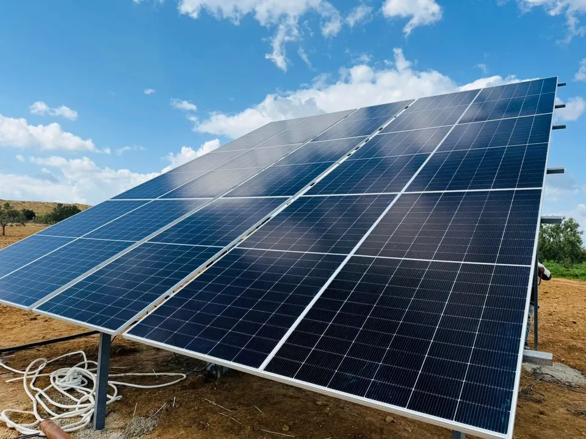
ضخ شمسيفيديو سطح
سطح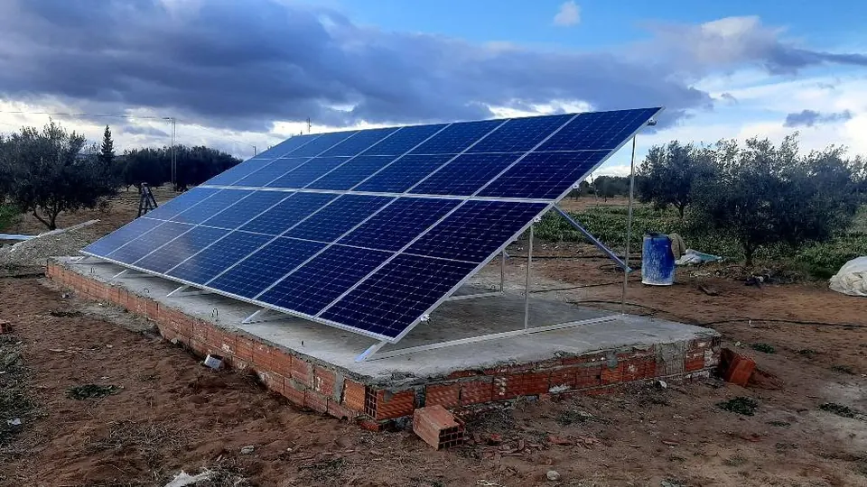
ضخ شمسي سطح
سطح سطح
سطح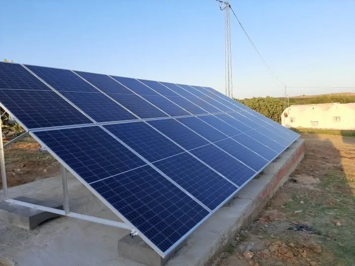
على الأرض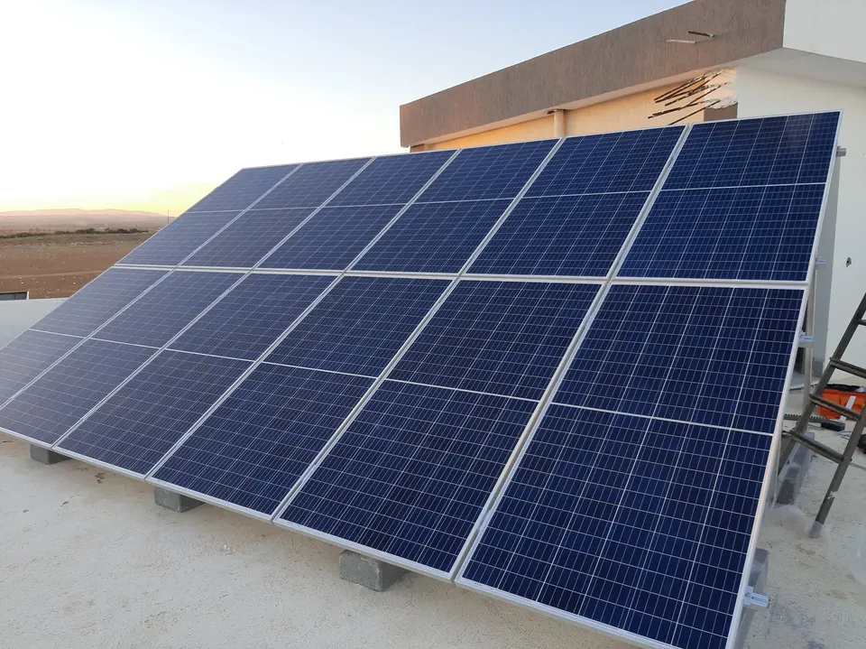
سطح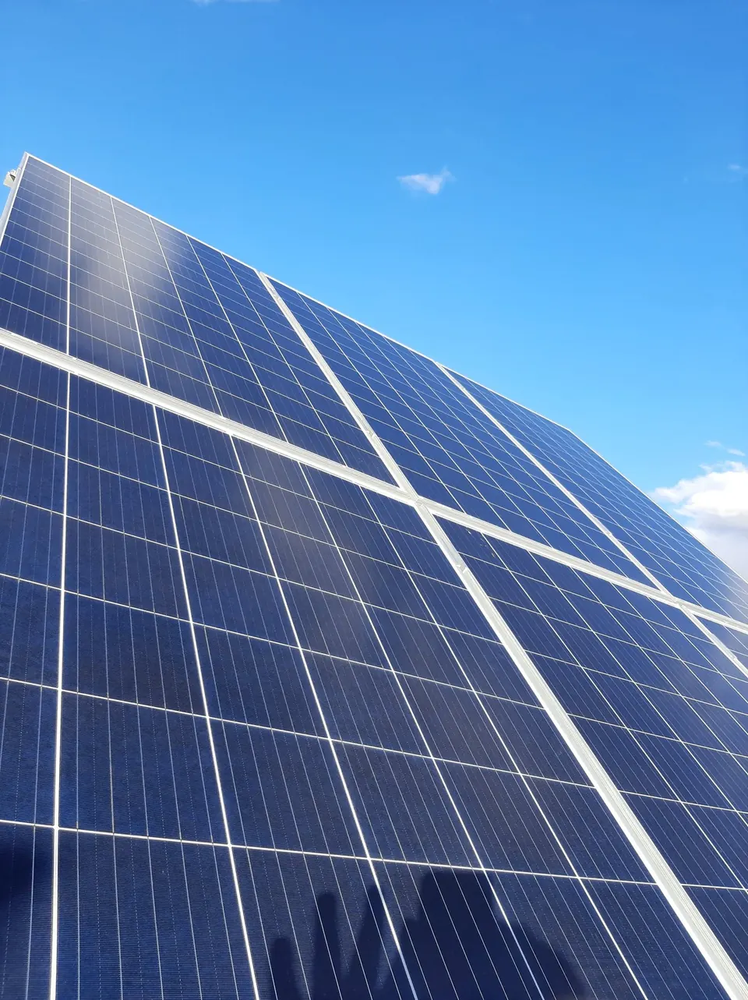
سطح سطح
سطح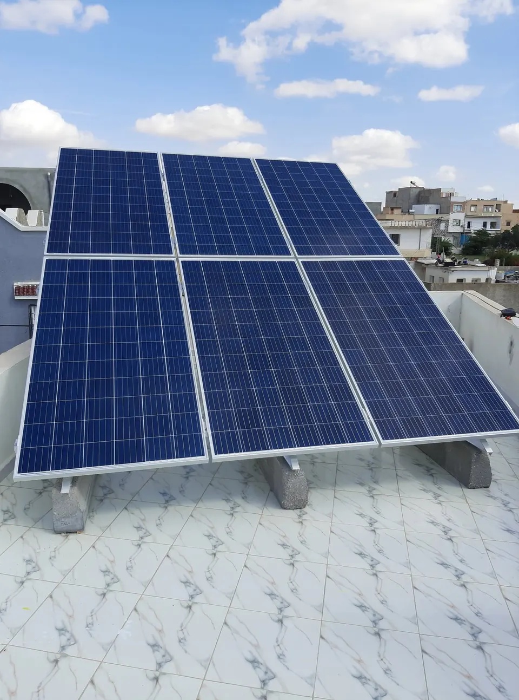
سطح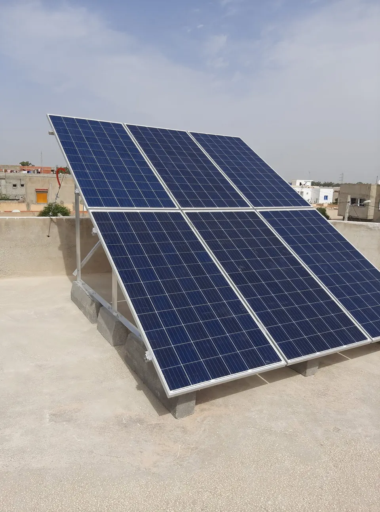
سطح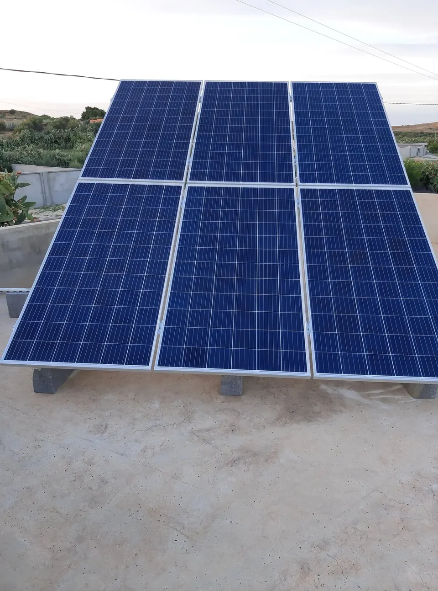
سطح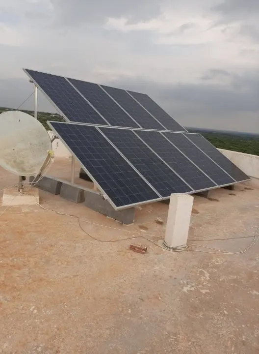
سطح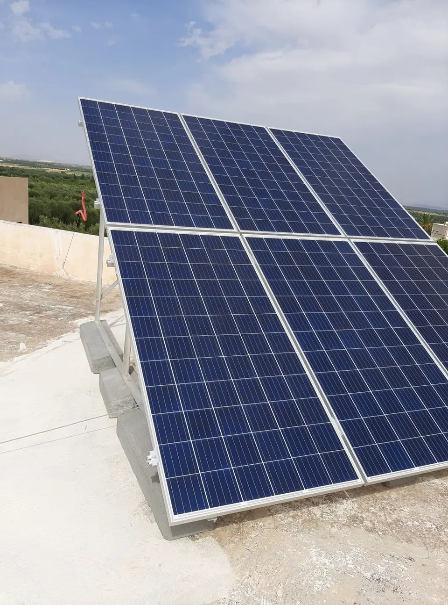
سطح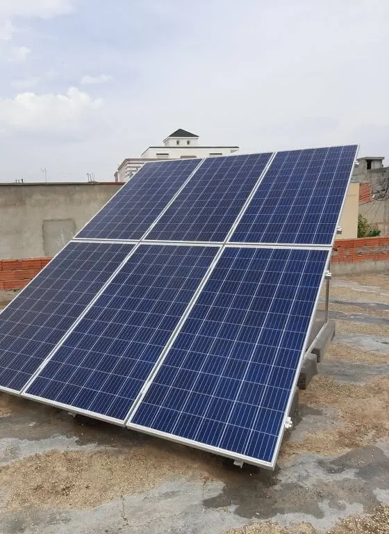
سطحSIGEP، شركة تركيب الطاقة الشمسية، ترافق العائلات و الفلاحة في تونس الكل باش يعدّيو للطاقة الشمسية.
شركة مرخص لها من طرف ANMESIGEP موجودة في قائمة ANME متاع الشركات المؤهّلة والمرخص لها لتركيب الأنظمة الشمسية المربوطة بشبكة الستاغ STEG.
فريق من الجهة، في السبيخةنعرفو الجهة و نجيوك لدارك، من أوّل موعد حتى لخدمة ما بعد البيع.
دراسة بلاش و نصايح واضحةناخذو الوقت الكل باش نفسّرولك كل شي قبل ما نقترحولك الحل.
توفير يدومالطاقة الشمسية تنقّص فاتورة الضو و تزيد في قيمة دارك لسنين طويلة.
معدّات موثوقة و تركيب نظيفأوندولورات، صناديق حماية AC/DC و هياكل صحيحة، مركّبة كيما يلزم.
شركة SIGEP مرخص لها من طرف ANME لتركيب الطاقة الشمسية المربوطة بشبكة الستاغ STEG. شوف القائمة الرسمية (PDF)
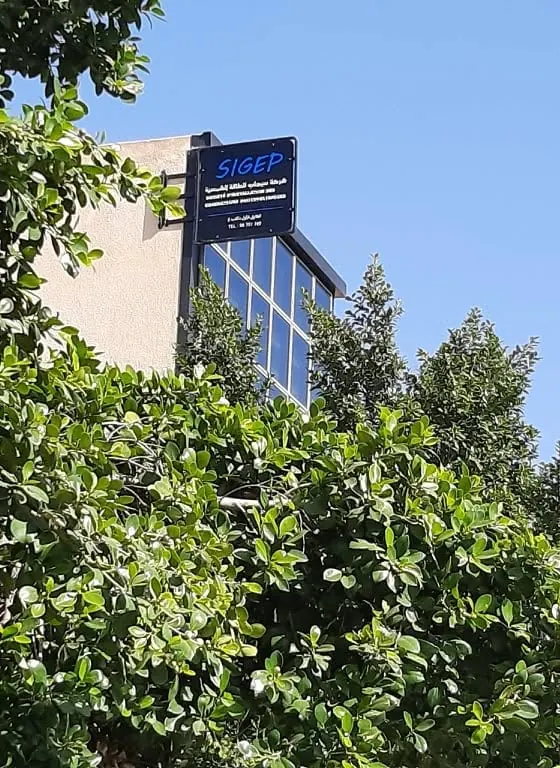
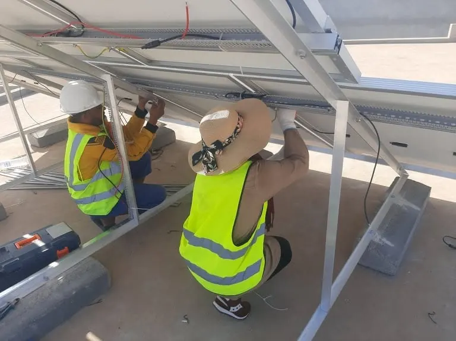
انقر على تصويرة باش تكبّرها؛ تنجم تتنقّل بأسهم الكلافيي ولا تسحب بصبعك على التليفون.
الشانطيات متاعنا منشورة على فيسبوك بالتصاور و الفيديوات. شوف المشاريع اللي عملناها، اقرا التعليقات و اسأل حرفاءنا مباشرة على رايهم.
نعم إني من الحرفاء bien satisfait ويمكن كان ندمت على حاجة واني تأخرت في تركيب الطاقة الشمسية بصيفة عامة ومع شركة SIGEP بصيفة خاصة لتميز عناصرها بالاتقان رحابة الصدر قبل وأثناء وبعد الإنجاز
بصراحة يعتيكم الصحة SIGEP انا ركبت والانتاج خارق للعادة والفائض بين الاستهلاك والانتاج واضح رغم الفصل الشتوي
رايك يعاون عائلات و فلاحة أخرين باش يعدّيو للطاقة الشمسية. شارك تجربتك في دقيقة.
أعطي رايك على Google (يتحل في أونغلي جديد) ولا على Facebook (يتحل في أونغلي جديد)كلّمنا، ابعثلنا على واتساب ولا ابعث طلبك من الاستمارة: نجاوبوك في أقرب وقت.
| من الاثنين للجمعة | من 8:00 حتى 17:00 |
| السبت | من 8:00 حتى 12:00 |
| الأحد | مغلق |